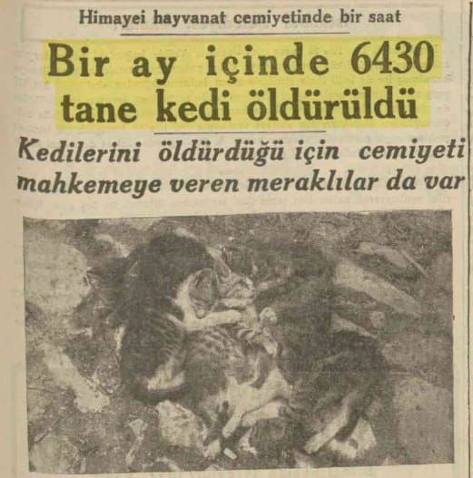
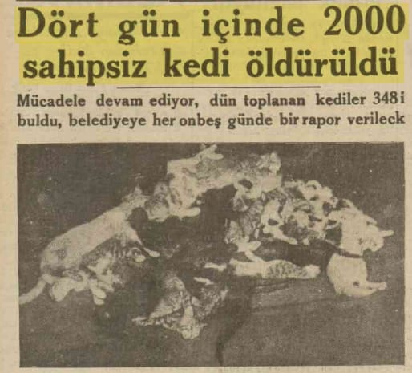
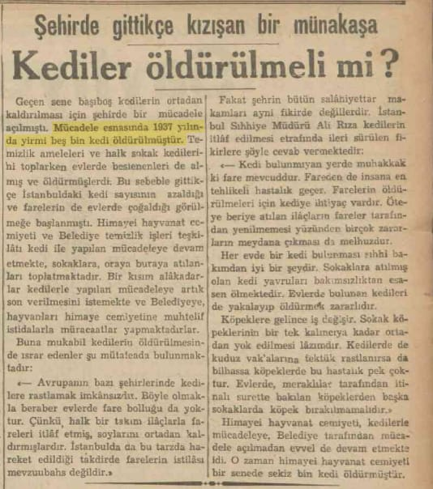
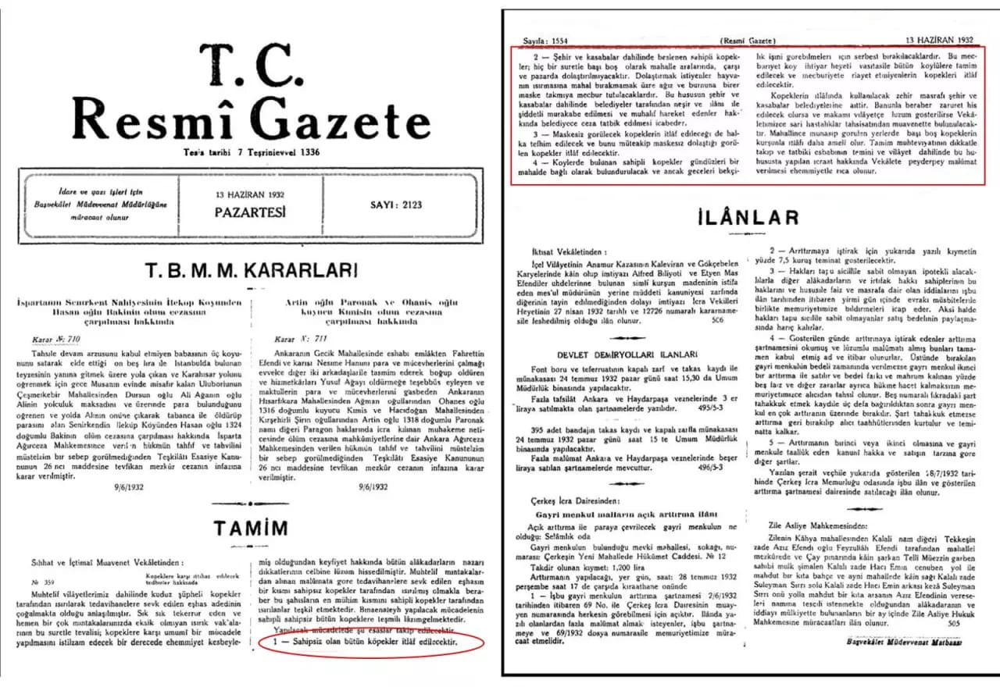
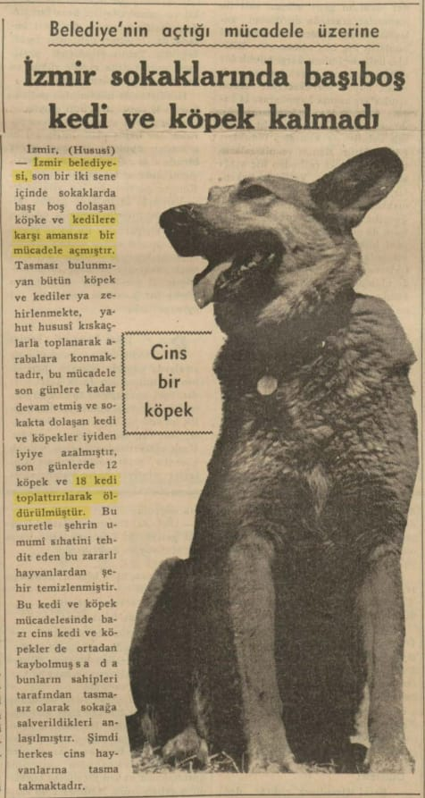
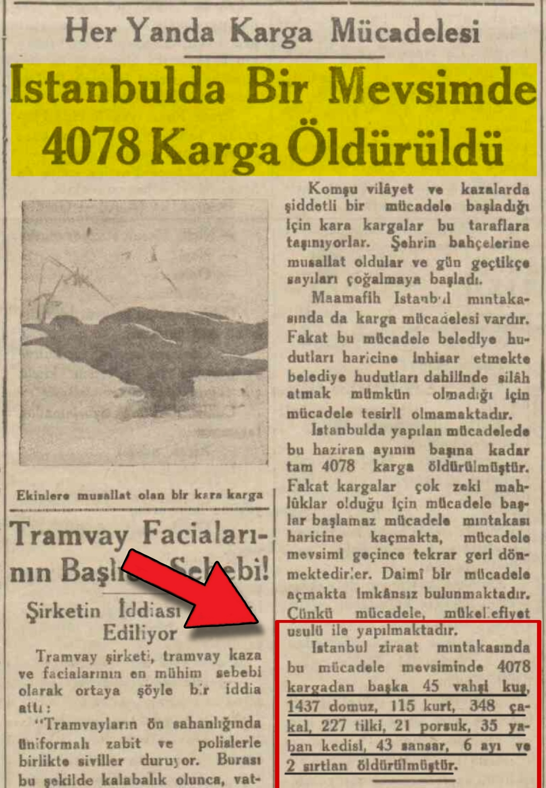
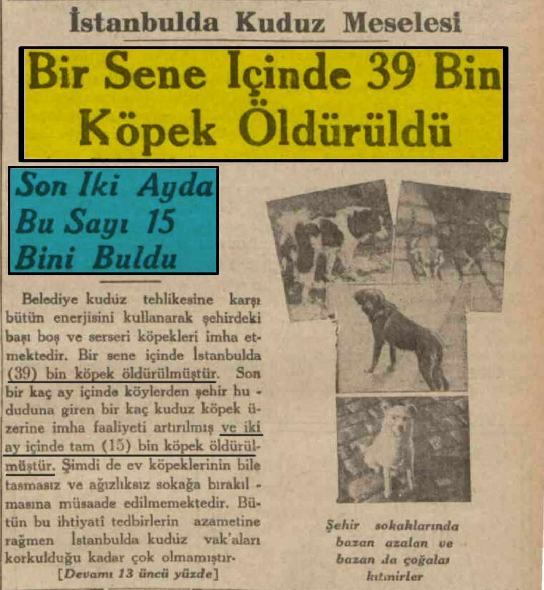

📌 *''Bir ay içinde 6430 tane kedi öld*rüldü''*📚 Son Posta Gazetesi, 28 Ağustos 1937, s. 9

- 📌 *''Dört gün içinde 2000 sahipsiz kedi öld*rüldü''* (Görseldeki kediler gazete bildirildiğine göre öldürülen kedilerdir.)📚 Son Posta Gazetesi, 24 Temmuz 1937, s. 4

- 📌 *''Mücadele esnasında 1937 yılında yirmi beş bin (25.000) kedi öld*rülmüştür.''*📚 Son Posta Gazetesi, 3 Temmuz 1938, s. 11

📌13 Haziran 1932 tarihinde Resmi Gazete'de yayınlanan, “sahipsiz ve maskesiz dolaşan köpeklerin itlaf edilmesine" dair genelge 📚 https://resmigazete.gov.tr/arsiv/2123.pdf

📌 İzmir'de itlaf edilen kediler:📚Ulus Gazetesi, 26 Ekim 1938

📌 **İstanbul'da bir mevsinde 4078 karga öldürülmüş. Kargadan başka vahşi kuş, d*muz,kurt,çakal,tilki,porsuk,
yaban kedisi,sansar,ayı ve sırtlanda öldürülmüştür.📚 Son Posta Gazetesi, 24 Haziran 1935, s.6

📌 *Bir senede 39 bin köpek öldürülmüş ve bunların 15 bini son iki ayda öldürülmüştür.*📚 Son Posta Gazetesi, 25 Ocak 1936, s.1